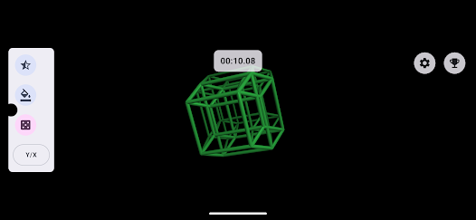

Follow your curiosity.
Choose dimensions and rotation planes, adjust the rates, and see how one motion changes another.
Explore Sandbox →An invitation into geometry
Start with a cube. Give it another direction to move in. Watch its projection fold, open, and turn as you explore a space beyond the three dimensions we know.
Enable JavaScript for a rotating hypercube illustration.
Three ways to explore
Choose dimensions and rotation planes, adjust the rates, and see how one motion changes another.
Explore Sandbox →Choose a dimension and speed, start a random rotation, and watch patterns develop with the controls tucked away.
Meet Muse →Use counter-rotation to settle the cube. Progress from familiar 3D into the challenge of higher dimensions.
Learn to play →
An actual Android app screenshot from the Google Play listing.
From 3D to 6D
Compare a cube, a tesseract, and 5D and 6D hypercubes. Show corners alone or add their connecting edges, and choose from eight display colors.
The image on your phone is a view into the geometry. As a shape rotates in its original space, its visible projection changes.
See how the projection works →Trace vertex highlights a single corner and dims the rest, leaving a trail of its recent path. A 1–60 second duration slider controls how much history stays on screen. Pause and resume let you stop and inspect the pattern.
Use these controls in Sandbox and Muse in the Android app, or explore the educational browser examples on this site.
Try a trace and compare rotations →For curious people and educators
Use simple experiments to develop intuition, then follow the mathematics as far as you like.